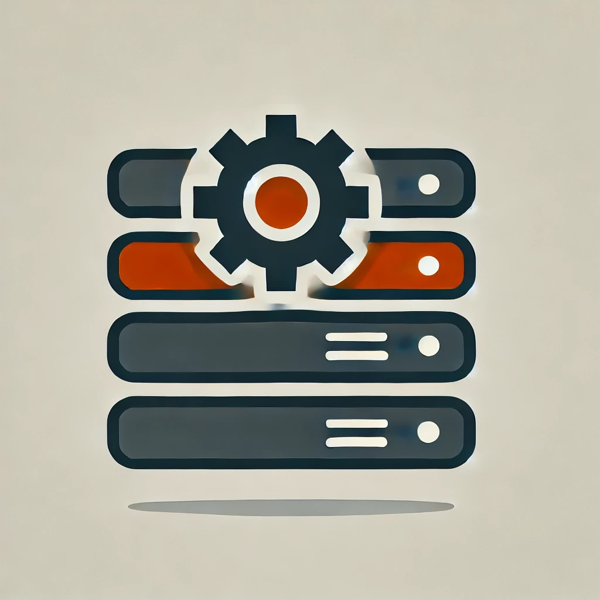

Learning Rust Through Web Server Implementation
Learning Journey Overview
This project represents the culmination of my comprehensive journey learning Rust, following the official Rust Book and additional course materials. While the web server implementation is straightforward, it demonstrates key Rust concepts and programming paradigms that I mastered throughout the learning process.
Key Learning Areas
Rust Fundamentals
- Ownership and Borrowing System
- Understanding Rust's unique memory management model
- Working with references and lifetimes
- Implementing Copy and Clone traits appropriately
- Type System
- Leveraging Rust's strong static typing
- Working with generics and traits
- Understanding algebraic data types
- Error Handling
- Using Result and Option types
- Implementing custom error types
- Error propagation patterns
Advanced Concepts
- Concurrency
- Thread management and synchronization
- Message passing between threads
- Safe concurrent data access
- Smart Pointers
- Understanding Box, Rc, and Arc
- Interior mutability with RefCell
- Custom smart pointer implementation
- Pattern Matching
- Destructuring complex data types
- Match expressions and pattern syntax
- Implementing custom patterns
Web Server Implementation
Technical Features
- Multi-threaded request handling using thread pool
- TCP connection management
- Basic HTTP request parsing
- Static file serving capabilities
- Graceful error handling and logging
Learning Resources
Core Materials
- The Rust Programming Language Book
- Comprehensive coverage of language fundamentals
- Practical examples and exercises
- Best practices and idioms
- Video Courses
- Hands-on implementation exercises
- Real-world application examples
- Performance optimization techniques
Key Takeaways
- Deep understanding of Rust's memory safety guarantees
- Practical experience with concurrent programming
- Appreciation for Rust's type system and compiler checks
- Familiarity with Rust's ecosystem and tooling
- Confidence in building systems-level applications